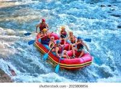
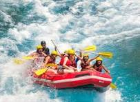

our Trips
a practise section at lagos apapa dock
a journey form the southern part of Nigeria to the western part of nigeria through the river niger water way

a 4 days marathon from lokoja to lagos Nigeria
an expendition at the atlantic in poharcourt
trips within Nigeria and it enveron
| rout in Nigeria | time and tour guide | cost per trip |
|---|---|---|
|
porharcout-lagos-rout benin republic-lagos-rout river niger-river-benue-rout |
monday-9am daily -mr henry(senior guide) tuesday-9am daily -mr sunday(assitant supervisor) wednesday-10am daily - suleman(company diver) |
$200 per trip $150 per trip $250 per trip |